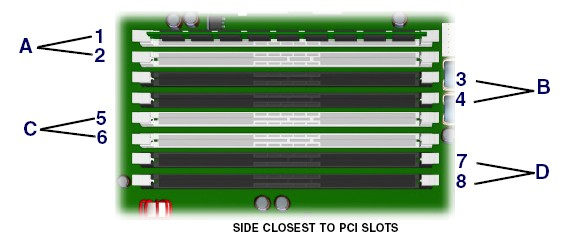

Operating Documentation
Direction 2378260-800, Rev# 10
Operating Documentation |
| System board or component damage could result. | |
| The cooling fan is off only when the workstation is turned off or the power cable has been disconnected. The cooling fan is always on when the workstation is in “On” or “Standby” mode. | |
| You must disconnect the power cord from the power source before opening the workstation. |
| Memory module damage could result during removal or installation. | |
| If you do not unplug the power cord while installing memory, your memory modules might be damaged and the system will not recognize the memory changes. | |
| Power off the workstation and unplug the power cord from the AC power outlet. Wait until the LED on the back of the power supply turns off before removing memory. |
| Turn off the workstation before disconnecting any cables. | |
TO PREVENT DAMAGE TO COMPONENTS WITHIN THE HSDA, OBSERVE THE
FOLLOWING ESD PRECAUTIONS:
FOR FURTHER INFORMATION REGARDING ESD PROTECTION, REFER TO THE SAFETY CHAPTER IN THIS PUBLICATION | |
| Condition | Reference | Eff |
|---|---|---|
Use only industry-standard, registered, PC2-3200 DIMMs | - | - |
Match DIMM pairs by size and type | - | - |
No support for unbuffered memory | - | - |
Perform the following steps before servicing the workstation.
Remove/disengage any security devices that prohibit opening the workstation.
Disconnect all peripheral device cables from the workstation.
Remove access panel cover per HP xw8200 Lower Level FRU Replacement.
Lay the workstation on its side with the system board facing up.
Gently push outwards on the socket levers on the slot that contains the suspected faulty memory module. (See Illustration 2 for slot locations.)
Lift the DIMM straight up and remove it from the unit ( Illustration 1).
To install a memory module, reverse the previous sequence and insert memory module in slot where faulty memory module was removed. Be aware of the following considerations:
Memory modules must be loaded in valid configurations.
DDR SDRAM is loaded as matched pairs. (For example, if you place a memory module of 1 GB in slot 1, you must also insert a 1-GB module in slot 2.)
Memory modules are loaded in pairs in order of size, from smallest to largest, beginning with memory module pair A (closest to PCI slots). (For example, if you have 3.5 GB of memory composed of two 256-MB modules, two 512-MB modules and two 1-GB modules, load the 256-MB modules in memory module pair A, the 512-MB modules in pair B, and the 1-GB modules in memory module pair C.)
The DIMM is installed in socket 1 if only installing one DIMM.
The first matched DIMM pair is installed in socket set A.
Subsequent matched DIMM pairs are installed in sets B, then C, and lastly D (farthest from power supply). (See Illustration 2.
Illustration 2: Installing DIMM Pairs

| NOTE: | The BIOS generates warnings/errors on invalid memory configurations. |
In DDR2 mode, dual-rank DIMMs are placed farther from the Memory Controller Hub (MCH) than single-rank DIMMs.
If there is no way to obtain a valid memory configuration by disabling some of the plugged-in memory, the BIOS will halt with a diagnostics 2004 code for memory error (4 beeps/blinks).
If the BIOS can find a valid memory configuration by disabling some of the plugged-in memory, it will do so and will report a warning during POST (“215-mismatched memory”). The system can still be booted in this condition.